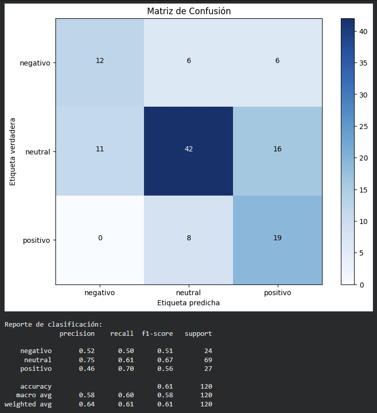

Análisis de Sentimientos

Este proyecto se enfocó en el análisis de la percepción pública durante las elecciones presidenciales de México 2024, utilizando información extraída de la red social X, antes Twitter. El objetivo fue identificar tendencias de opinión hacia las candidatas Claudia Sheinbaum y Xóchitl Gálvez durante momentos importantes de la campaña, como la precampaña y el periodo posterior a los debates.
Debido a las limitaciones de acceso a la API oficial de X, se utilizó una estrategia de Web Scraping mediante la herramienta Bardeen, lo que permitió recolectar publicaciones para su posterior procesamiento y análisis. A partir de estos datos, se aplicaron técnicas de limpieza, transformación y preparación de texto para eliminar ruido, caracteres especiales, menciones, hashtags irrelevantes y otros elementos que pudieran afectar el análisis.
Posteriormente, se desarrolló un modelo de clasificación supervisada utilizando Python y el algoritmo Naive Bayes, con el propósito de clasificar los comentarios en tres categorías principales: positivo, negativo y neutral. Este proceso permitió analizar de forma automática la polaridad de los mensajes y comparar la percepción digital de cada candidata.
Además del modelo de clasificación, se utilizaron herramientas de visualización y análisis estadístico para interpretar los resultados obtenidos. Se generaron gráficas, nubes de palabras, matrices de confusión e intervalos de confianza, con el objetivo de evaluar el comportamiento de los datos y validar la confiabilidad del análisis.
Como resultado, el proyecto permitió identificar cambios importantes en la percepción pública durante la campaña electoral. El análisis mostró variaciones en los comentarios positivos, negativos y neutrales antes y después de los debates, permitiendo comparar la aceptación digital de cada candidata con base en los datos recolectados.
Este proyecto fortaleció mis conocimientos en análisis de datos, procesamiento de lenguaje natural, clasificación de texto, visualización de información y aplicación de modelos de Machine Learning en problemas sociales y de opinión pública.
Resultados obtenidos
- Recolección de publicaciones desde la red social X mediante Web Scraping.
- Limpieza y preparación de texto para análisis de sentimientos.
- Clasificación de comentarios en positivos, negativos y neutrales.
- Entrenamiento de un modelo supervisado con Naive Bayes.
- Generación de visualizaciones para interpretar la percepción pública.
- Evaluación del modelo mediante matriz de confusión y análisis estadístico.